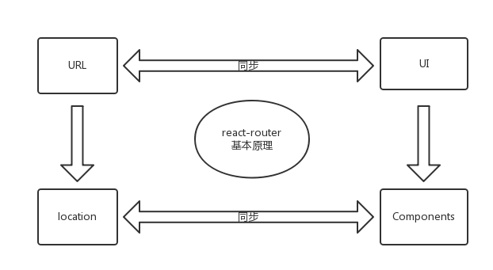
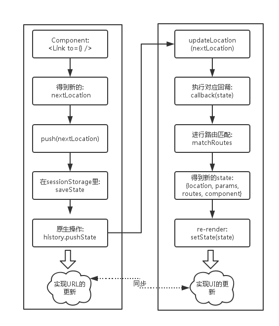
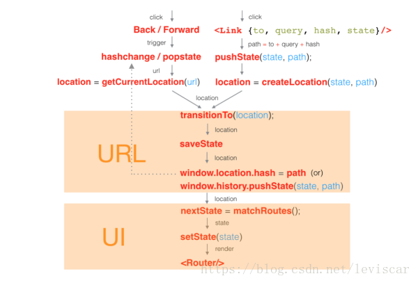
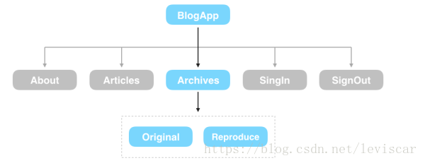

# 一、React Router基础之history
# 1.1 History介绍
history是一个独立的第三方js库，可以用来兼容在不同浏览器、不同环境下对历史记录的管理，拥有统一的API。具体来说里面的history分为三类
- 老浏览器的
history: 主要通过hash来实现，对应createHashHistory - 高版本浏览器: 通过
html5里面的history，对应createBrowserHistory node环境下: 主要存储在memeory里面，对应createMemoryHistory
上面针对不同的环境提供了三个
API，但是三个API有一些共性的操作，将其抽象了一个公共的文件createHistory
// 内部的抽象实现
function createHistory(options={}) {
...
return {
listenBefore, // 内部的hook机制，可以在location发生变化前执行某些行为，AOP的实现
listen, // location发生改变时触发回调
transitionTo, // 执行location的改变
push, // 改变location
replace,
go,
goBack,
goForward,
createKey, // 创建location的key，用于唯一标示该location，是随机生成的
createPath,
createHref,
createLocation, // 创建location
}
}
上述这些方式是
history内部最基础的方法，createHashHistory、createBrowserHistory、createMemoryHistory只是覆盖其中的某些方法而已。其中需要注意的是，此时的location跟浏览器原生的location是不相同的，最大的区别就在于里面多了key字段，history内部通过key来进行location的操作
function createLocation() {
return {
pathname, // url的基本路径
search, // 查询字段
hash, // url中的hash值
state, // url对应的state字段
action, // 分为 push、replace、pop三种
key // 生成方法为: Math.random().toString(36).substr(2, length)
}
}
# 1.2 内部解析
三个
API的大致的技术实现如下
createBrowserHistory: 利用HTML5里面的historycreateHashHistory: 通过hash来存储在不同状态下的history信息createMemoryHistory: 在内存中进行历史记录的存储`
# 1.2.1 执行URL前进
createBrowserHistory:pushState、replaceStatecreateHashHistory:location.hash=*** location.replace()createMemoryHistory: 在内存中进行历史记录的存储
// 伪代码
// createBrowserHistory(HTML5)中的前进实现
function finishTransition(location) {
...
const historyState = { key };
...
if (location.action === 'PUSH') ) {
window.history.pushState(historyState, null, path);
} else {
window.history.replaceState(historyState, null, path)
}
}
// createHashHistory的内部实现
function finishTransition(location) {
...
if (location.action === 'PUSH') ) {
window.location.hash = path;
} else {
window.location.replace(
window.location.pathname + window.location.search + '#' + path
);
}
}
// createMemoryHistory的内部实现
entries = [];
function finishTransition(location) {
...
switch (location.action) {
case 'PUSH':
entries.push(location);
break;
case 'REPLACE':
entries[current] = location;
break;
}
# 1.2.2 检测URL回退
createBrowserHistory:popstatecreateHashHistory:hashchangecreateMemoryHistory:因为是在内存中操作，跟浏览器没有关系，不涉及UI层面的事情，所以可以直接进行历史信息的回退
// 伪代码
// createBrowserHistory(HTML5)中的后退检测
function startPopStateListener({ transitionTo }) {
function popStateListener(event) {
...
transitionTo( getCurrentLocation(event.state) );
}
addEventListener(window, 'popstate', popStateListener);
...
}
// createHashHistory的后退检测
function startPopStateListener({ transitionTo }) {
function hashChangeListener(event) {
...
transitionTo( getCurrentLocation(event.state) );
}
addEventListener(window, 'hashchange', hashChangeListener);
...
}
// createMemoryHistory的内部实现
function go(n) {
if (n) {
...
current += n;
const currentLocation = getCurrentLocation();
// change action to POP
history.transitionTo({ ...currentLocation, action: POP });
}
}
# 1.2.3 state的存储
为了维护
state的状态，将其存储在sessionStorage里面:
// createBrowserHistory/createHashHistory中state的存储
function saveState(key, state) {
...
window.sessionStorage.setItem(createKey(key), JSON.stringify(state));
}
function readState(key) {
...
json = window.sessionStorage.getItem(createKey(key));
return JSON.parse(json);
}
// createMemoryHistory仅仅在内存中，所以操作比较简单
const storage = createStateStorage(entries); // storage = {entry.key: entry.state}
function saveState(key, state) {
storage[key] = state
}
function readState(key) {
return storage[key]
}
# 1.3 小结
路由原理
前端路由实现起来其实很简单，本质就是监听
URL的变化，然后匹配路由规则，显示相应的页面，并且无须刷新。目前单页面使用的路由就只有两种实现方式
hash模式history模式
www.test.com/##/就是Hash URL，当##后面的哈希值发生变化时，不会向服务器请求数据，可以通过hashchange事件来监听到URL的变化，从而进行跳转页面。
History模式是HTML5新推出的功能，比之Hash URL更加美观
# 二、react-router的基本原理
实现
URL与UI界面的同步。其中在react-router中，URL对应Location对象，而UI是由react components来决定的，这样就转变成location与components之间的同步问题

# 2.1 优点
- 与
React融为一体,专为react量身打造，编码风格与react保持一致，例如路由的配置可以通过component来实现 - 不需要手工维护路由
state，使代码变得简单 - 强大的路由管理机制，体现在如下方面
- 路由配置: 可以通过组件、配置对象来进行路由的配置
- 路由切换: 可以通过
<Link>Redirect进行路由的切换 - 路由加载: 可以同步记载，也可以异步加载，这样就可以实现按需加载
- 使用方式: 不仅可以在浏览器端的使用，而且可以在服务器端的使用
# 2.2 react-router具体实现
react-router在history库的基础上，实现了URL与UI的同步，分为两个层次来描述具体的实现。
组件层面描述实现过程
在
react-router中最主要的component是Router RouterContext Link，history库起到了中间桥梁的作用
以
browserHistory(一种history类型:一个history知道如何去监听浏览器地址栏的变化， 并解析这个URL转化为location对象)为例 :
browserHistory进行路由state管理,主要通过sessionStorage
//保存 路由state(router state)
function saveState(key, state) {
...
window.sessionStorage.setItem(createKey(key), JSON.stringify(state));
}
//读取路由state
function readState(key) {
...
json = window.sessionStorage.getItem(createKey(key));
return JSON.parse(json);
}
其中
saveState函数传进来的state是个json对象，如：
{route: '/about'} ///假设此时的location为'/about'
进行路由匹配，最终渲染对应的组件
const About = React.createClass({/*...*/}) //About 组件
const Inbox = React.createClass({/*...*/}) //Inbox 组件
const Home = React.createClass({/*...*/}) //Home组件
render() {
let Child
switch (this.state.route) {
case '/about': Child = About; break;
case '/inbox': Child = Inbox; break;
default: Child = Home;
}
return (
<div>
<h1>App</h1>
<ul>
<li><a href="#/about">About</a></li>
<li><a href="#/inbox">Inbox</a></li>
</ul>
<Child/>
</div>
)
}
})
React.render(<App />, document.body)
API层面描述实现过程
为了简单说明，只描述使用
browserHistory的实现，hashHistory的实现过程是类似的，就不在说明

# 2.3 用户点击了Link组件后路由系统中到底发生了哪些变化

Link组件最终会渲染为HTML标签<a>，它的to、query、hash属性会被组合在一起并渲染为href属性。虽然Link被渲染为超链接，但在内部实现上使用脚本拦截了浏览器的默认行为，然后调用了history.pushState方法
- 系统会将上述
location对象作为参数传入到TransitionTo方法中，然后调用window.location.hash或者window.history.pushState()修改了应用的URL，这取决于你创建history对象的方式。同时会触发history.listen中注册的事件监听器。 - 接下来请看路由系统内部是如何修改
UI的。在得到了新的location对象后，系统内部的matchRoutes方法会匹配出Route组件树中与当前location对象匹配的一个子集，并且得到了nextState，具体的匹配算法不在这里讲解，感兴趣的同学可以点击查看，state的结构如下
nextState = {
location, // 当前的 location 对象
routes, // 与 location 对象匹配的 Route 树的子集，是一个数组
params, // 传入的 param，即 URL 中的参数
components, // routes 中每个元素对应的组件，同样是数组
};
在
Router组件的componentWillMount生命周期方法中调用了history.listen(listener)方法。listener会在上述matchRoutes方法执行成功后执行listener(nextState)，nextState对象每个属性的具体含义已经在上述代码中注释，接下来执行this.setState(nextState)就可以实现重新渲染Router组件。举个简单的例子，当 URL（准确的说应该是location.pathname） 为/archives/posts时，应用的匹配结果如下图所示

到这里，系统已经完成了当用户点击一个由
Link组件渲染出的超链接到页面刷新的全过程